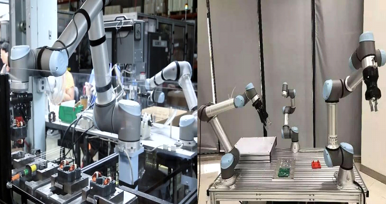

Hello everyone
Are you intersted in science? Does your "big brain" has no place to use? Still having math problem for school work or tests? Here you are in the right place!come and take part in this club and we are willing to accept your opinion! click here to learn more info
1) Making science projects and doing robotics, share your different ideas about what you want to build or design( My initial idea is making drones. Anyone else can share about their own ideas or opinions about what they want to do if he/she joins this club). Go Dutch if we’re buying any supplies
2) Math help: So if you have any math questions for your homework, SAT, PSAT etc. you are willing to come here and ask the club members or me if us are available. You don’t actually have to join this club for getting math help, but that can’t be better that if you join the club.And also when you have your questions done, please support us with the "financial issues"
Since there is no after school program, the club will be held during lunch time on Thursday.
Peter Chen and Mr.kim.